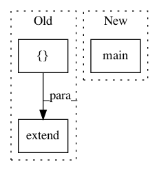

73162ce7ca689cd10f67b823f54d3fbf81e8ee91,doc/source/conf.py,,,#,408
Before Change
// We only document __init__.py files... except for these special cases.
// Use the unix full pathname from the root of the checked out repo
explicit_wanted_files = [
"spynnaker/gsyn_tools.py",
"spynnaker/spike_checker.py",
"spynnaker/plot_utils.py",
"spynnaker/pyNN/abstract_spinnaker_common.py",
"spynnaker/pyNN/exceptions.py",
"spynnaker/pyNN/spynnaker_simulator_interface.py",
"spynnaker/pyNN/spynnaker_external_device_plugin_manager.py",
"spynnaker/pyNN/models/abstract_pynn_model.py",
"spynnaker/pyNN/models/projection.py",
"spynnaker/pyNN/models/defaults.py",
"spynnaker/pyNN/models/recorder.py",
"spynnaker/pyNN/models/neuron/key_space_tracker.py",
"spynnaker/pyNN/models/neuron/synaptic_matrices.py",
"spynnaker/pyNN/models/neuron/master_pop_table.py",
"spynnaker/pyNN/models/neuron/synaptic_matrix.py",
"spynnaker/pyNN/models/neuron/synapse_io.py",
"spynnaker/pyNN/models/neuron/synaptic_matrix_app.py",
"spynnaker/pyNN/models/neuron/plasticity/stdp/common.py",
"spynnaker/pyNN/models/spike_source/spike_source_array_vertex.py",
"spynnaker/pyNN/models/spike_source/spike_source_poisson_vertex.py",
"spynnaker/pyNN/models/spike_source/spike_source_poisson_machine_vertex.py",
"spynnaker/pyNN/models/common/recording_utils.py",
"spynnaker/pyNN/utilities/bit_field_utilities.py",
"spynnaker/pyNN/utilities/spynnaker_failed_state.py",
"spynnaker/pyNN/utilities/constants.py",
"spynnaker/pyNN/utilities/data_cache.py",
"spynnaker/pyNN/utilities/extracted_data.py",
"spynnaker/pyNN/utilities/fake_HBP_Portal_machine_provider.py",
"spynnaker/pyNN/utilities/running_stats.py",
"spynnaker/pyNN/utilities/utility_calls.py",
"spynnaker/pyNN/utilities/struct.py",
"spynnaker/pyNN/utilities/variable_cache.py",
"spynnaker8/spynnaker8_simulator_interface.py",
"spynnaker8/spynnaker_plotting.py",
"spynnaker8/utilities/neo_convertor.py",
"spynnaker8/utilities/neo_compare.py"]
options = ["-o", output_dir, ".",
// Exclude test and setup code
"p8_integration_tests/*", "unittests/*", "setup.py"]
options.extend(filtered_files("spynnaker", explicit_wanted_files))
options.extend(filtered_files("spynnaker8", explicit_wanted_files))
apidoc.main(options)
After Change
fl not in ("index.rst", "modules.rst")):
os.remove(fl)
os.chdir("../..") // WARNING! RELATIVE FILENAMES CHANGE MEANING HERE!
apidoc.main([
"-o", _output_dir, ".",
// Exclude test and setup code
"p8_integration_tests/*", "unittests/*", "setup.py",
*filtered_files("spynnaker", _unfiltered_files),
*filtered_files("spynnaker8", _unfiltered_files)])
In pattern: SUPERPATTERN
Frequency: 3
Non-data size: 3
Instances
Project Name: SpiNNakerManchester/sPyNNaker
Commit Name: 73162ce7ca689cd10f67b823f54d3fbf81e8ee91
Time: 2021-02-25
Author: donal.k.fellows@manchester.ac.uk
File Name: doc/source/conf.py
Class Name:
Method Name:
Project Name: scipy/scipy
Commit Name: faf24ec3981214b64911edd82a161f70f433fad6
Time: 2008-01-08
Author: matthew.brett@gmail.com
File Name: scipy/weave/tests/test_wx_spec.py
Class Name:
Method Name:
Project Name: GoogleCloudPlatform/ml-on-gcp
Commit Name: 8079adae33711e4886a625df3f0ae9860739f7b9
Time: 2019-09-03
Author: yuhanliu@google.com
File Name: example_zoo/tools/process.py
Class Name:
Method Name: